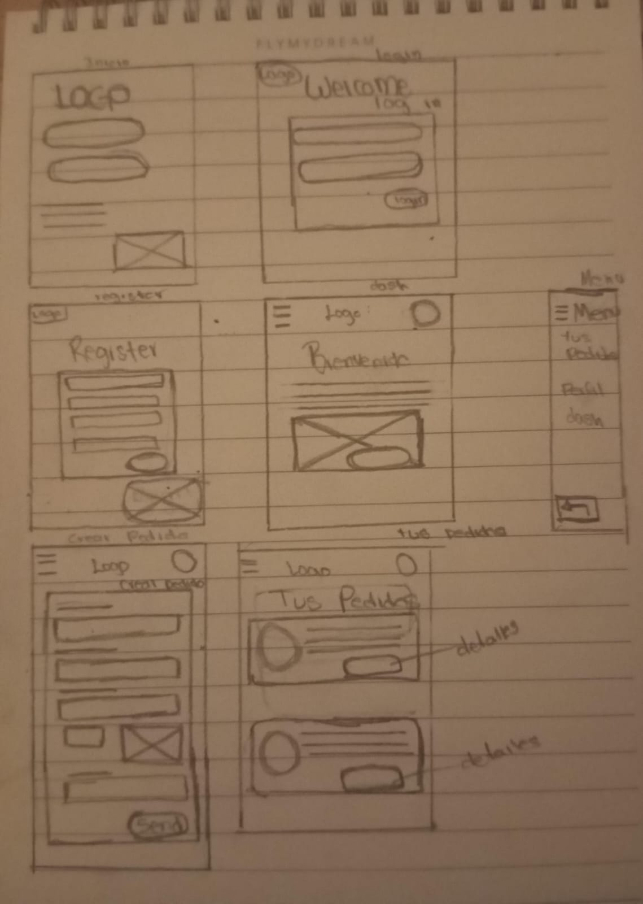

Entender a los usuarios:
Llevar a cabo estudios de usuarios para comprender sus necesidades y comportamientos.
La investigación revela que los usuarios tienen dificultades para encontrar un servicio de envíos que garantice seguridad y transparencia en la localización de sus pedidos.

Paper wireframe
Para estructurar la solución, se creó un esquema inicial del flujo del usuario y los módulos clave del sistema.
Este mapa sirvió como base para definir jerarquías de información, prioridades y navegación, asi como a establecer el diseño básico de una pantalla..
Wireframes Digitales
Después de validar los flujos de navegación, se desarrollaron wireframes digitales en Figma, tanto para versión desktop como móvil. Estos prototipos permitieron visualizar la interfaz, jerarquía visual y funciones clave.